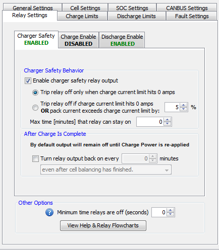

These settings relate to the supported relay signals for enabling / disabling output current, input current and the charger.
Associated Parameters & Screens:
Charger Safety Relay Settings
Charger Safety Relay Flowchart
Discharge Enable Relay Settings
Discharge Enable Relay Flowchart
Charge Enable Relay Settings
Charge Enable Relay Flowchart
Minimum Relay Restore Time